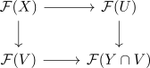

descent along a sieve generated by two subobjects
Proposition
Let $X \in \mathcal{C}$ be an object and let $U,V \subseteq X$ be a pair of subobjects of $X$ and let $R$ be the sieve on $X$ generated by the inclusion of $U$ and $V$. Suppose the pullback $U \cap V = U \times_{X} V$ exists and let $\mathcal{F}$ be a presheaf.
TFAE:
- $\mathcal{F}$ satisfies descent
- the square

is a pullback
Proof
follows from sieve generated by two subobjects: The sieve $R$ is isomorphic to $よ(U) \coprod_{よ(U \cap V)} よ(V)$ and hence the map $R \rightarrow よ(X)$ is an equivalence if and only if
\begin{align*}
\mathcal{F}(X) \cong& \mathrm{Hom}_{\mathcal{P}(\mathcal{C})}(X,\mathcal{F}) \\
\overset{!}{\cong} \mathrm{Hom}_{\mathcal{P}(\mathcal{C})}(R,\mathcal{F}) \\
\cong& \mathrm{Hom}_{\mathcal{P}(\mathcal{C})}(よ(U) \coprod_{よ(U \cap V)} よ(V),\mathcal{F}) \\
\cong& \mathcal{F}(U) \times_{\mathcal{F}(U \cap V)} \mathcal{F}(V)
\end{align*}
the composition is an equivalence